Stupnice
Pentatonika, blues škála, mody durové stupnice — v pozicích po celém hmatníku, propojené do plynulých linek, ne izolovaných krabiček.
ROCK · BLUES · METAL
Výuka elektrické kytary v Plzni.
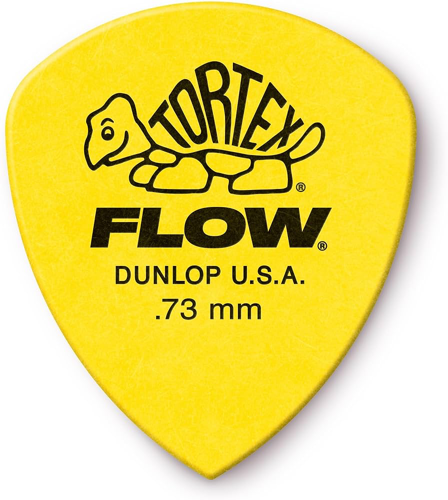
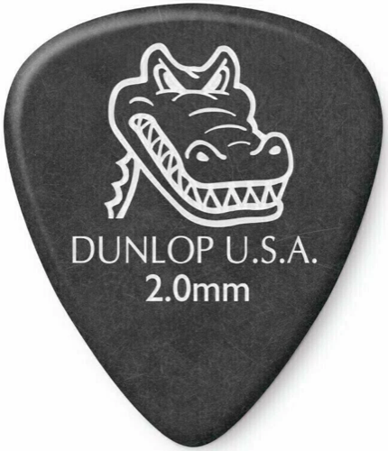
Co se naučíš
Pentatonika, blues škála, mody durové stupnice — v pozicích po celém hmatníku, propojené do plynulých linek, ne izolovaných krabiček.
Přirozené i umělé (pinch) flažolety — zvonivé akcenty do sól i riffů, přesná technika pravé ruky.
Rozklady akordů pro melodičtější sóla, sweep picking a legato běhy, které zní jinak než klasické škálové patterny.
Power chordy, barré, rozšířené a doplněné akordy (add9, sus, 7) — a systém pěti tvarů CAGED, díky kterému se přestaneš ztrácet na hmatníku a uvidíš, jak spolu souvisí akordy, stupnice a arpeggia.
Akordové postupy, funkční harmonie a modální hraní — proč fungují ty progrese, které máš rád, a jak si vytvořit vlastní.
Nahrávací techniky, práce se zesilovačem a efekty ve studiu i doma, simulace — od čistého tónu po hotový nahraný riff.
Vrtačka na strunách, bottleneck (slide) smyčec, e-bow a jiná kvílení — zvukové experimenty za hranicí klasické hry, pro vlastní zvukový podpis.
Celotónové i půltónové tahy, dvojité bendy a jejich přesné doladění — základní výrazový prvek kytarových sól.
Palm muting pravou rukou i tlumení levou, pětky a jejich posuny po celém hmatníku — čistý zvuk bez zbytečného šumu a základní stavební kámen rockových a metalových riffů.
Legato technika levé ruky, vibrato prstem i zápěstím a plynulé skluzy mezi pozicemi — spojovací prvky mezi frázemi a cesta ke zpěvnému sólu s vlastním charakterem.
Improvizace přes akordové postupy a hraní do podkladů (backtracků) — všechno naučené v praxi.
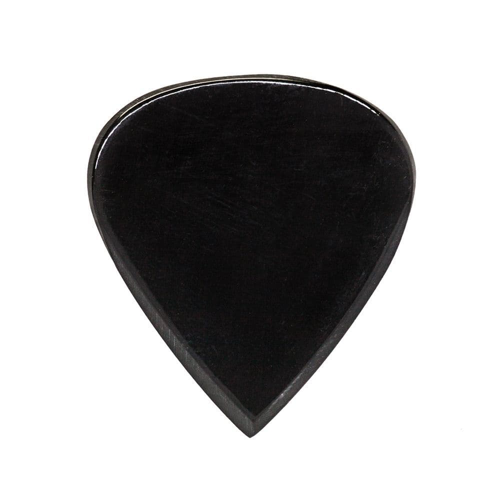
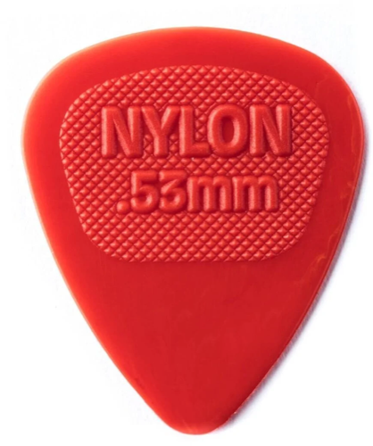
Styl podle tebe
Power chordy, palm muting, pentatonická sóla a riffy s energií — základ, na kterém stojí všechno ostatní.
Bendy, vibrato, call & response fráze, dvanáctitaktová forma a cit pro rytmus — technika, co se učí uchem.
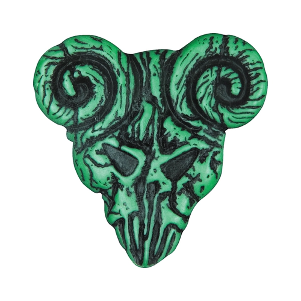
Alternate a tremolo picking, sweep arpeggia, tapping a modální riffy pro maximální razanci a přesnost.
Kde je jazz?Inu, jazz je široký pojem, a určitě na něj mnohokrát narazíme. Ale jsem rocker, a nepatřím ke swingovým fanatikům.
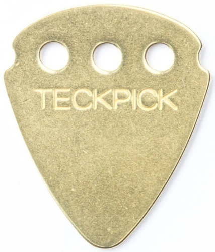
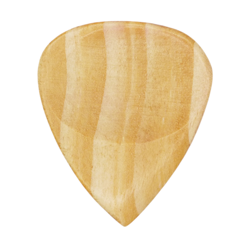
Jak to funguje
Probereme tvou úroveň, oblíbené kapely a žánry a to, co chceš hrát a umět.
Sestavíme cvičení na míru a průběžně opravujeme chyby, ať se neupevní špatné návyky.
Pravidelné lekce v Plzni — každá navazuje na předchozí, s jasným zadáním na cvičení mezi nimi.
Společně dáme dohromady krátkou skladbu, ve které spojíme všechno, co umíš zahrát.
Nahraješ vlastní krátkou nahrávku, na které bude slyšet, co všechno zvládáš.
Typická hodina
Rozehrání a technika, upevnění probíraných stupnic, akordů a hmatů — základ, na kterém stojí zbytek hodiny.
Práce na konkrétním riffu nebo skladbě, kterou chceš umět zahrát — rozebereme ji, nacvičíme a propojíme.
Hraní přes podklad a hledání vlastních frází — prostor vyzkoušet si probrané naživo.
Vysvětlení, proč to funguje — harmonie a souvislosti, díky kterým budeš hrát s pochopením, ne jen z paměti.
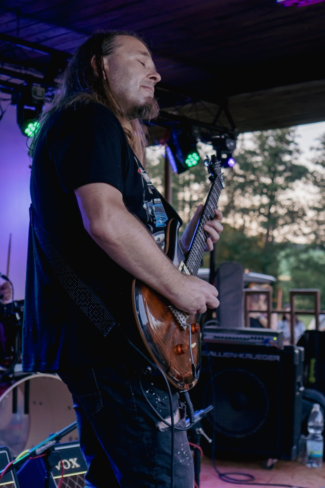
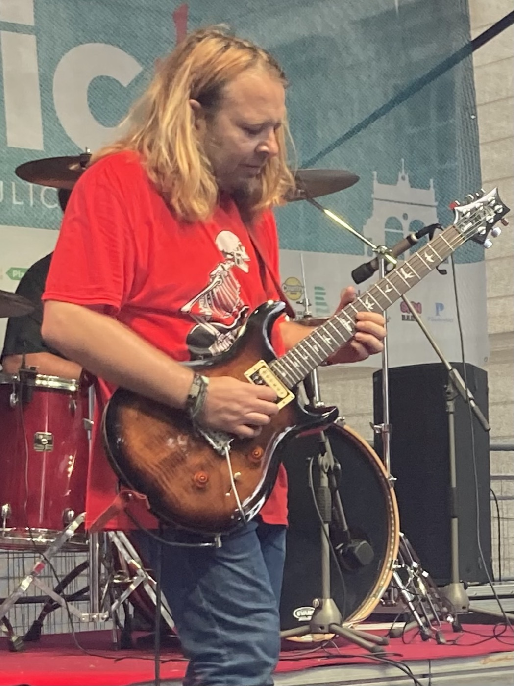
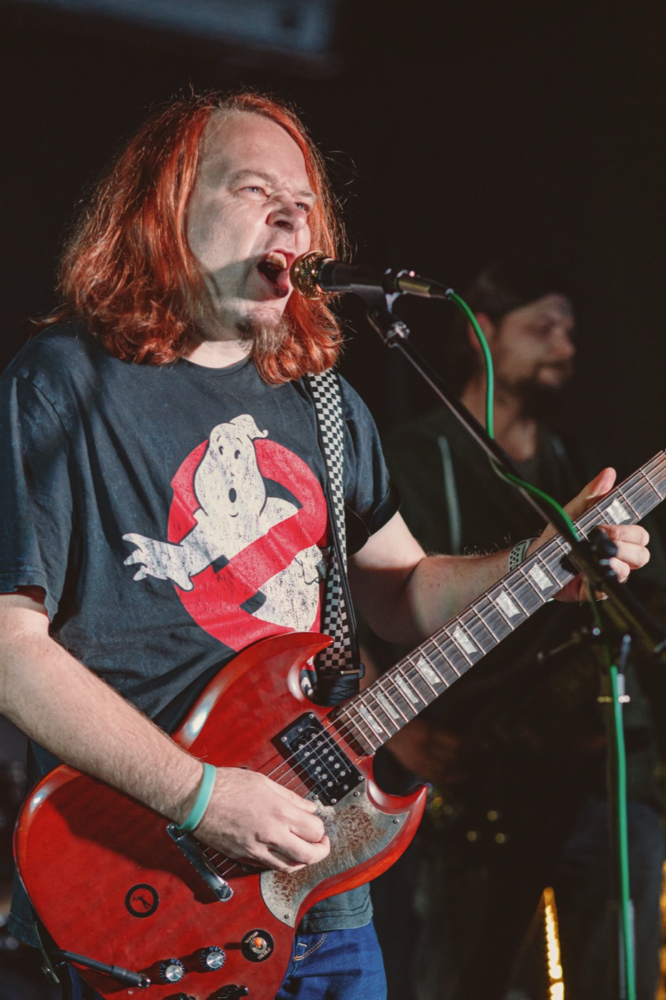
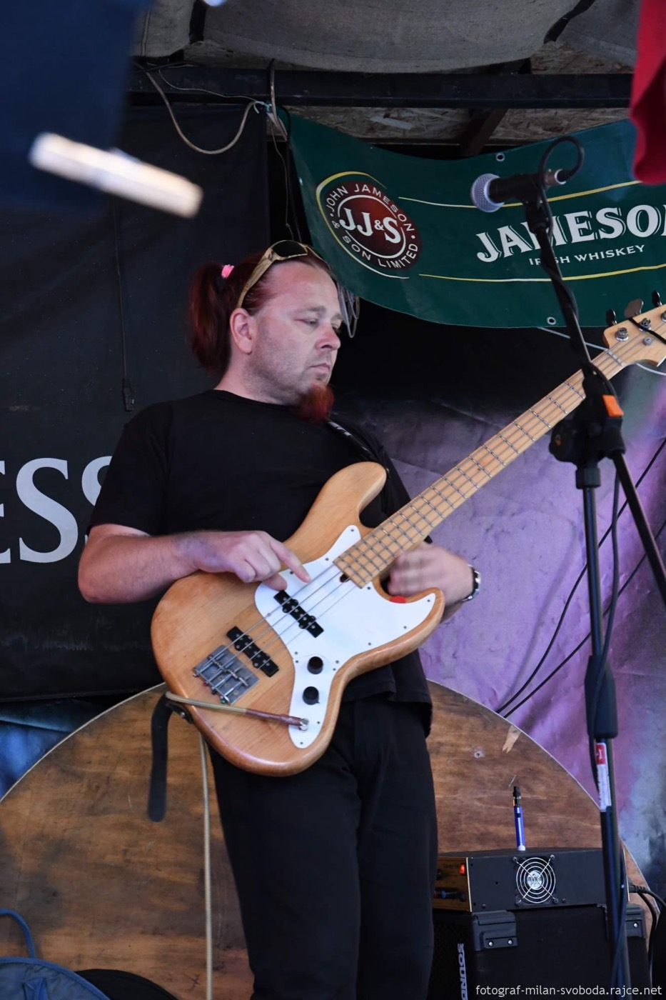
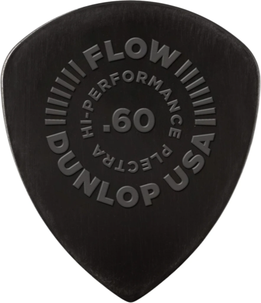
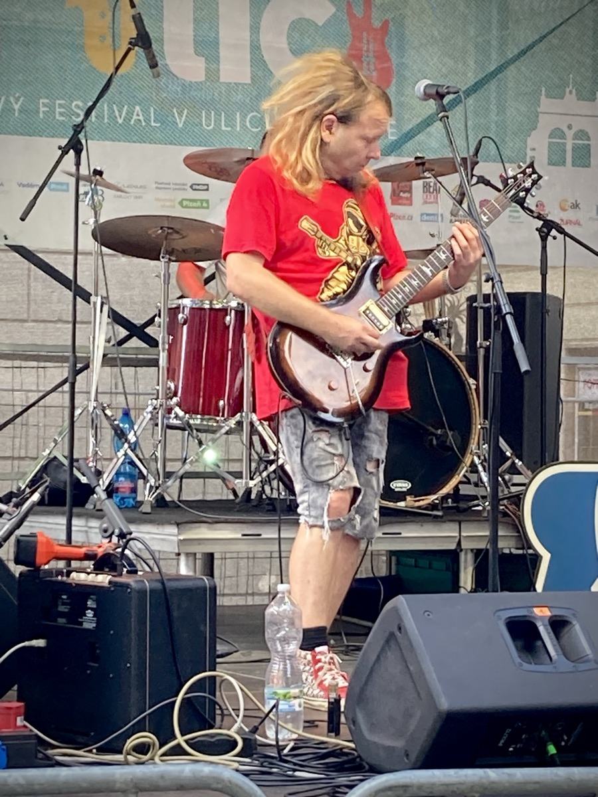
Lektor
Na kytaru hraju od roku 1991 — kromě elektrické kytary i na baskytaru a klavír, což se hodí, když je potřeba vysvětlit harmonii (je to tam tak nějak lépe vidět).
Nejsem zrovna vášnivý čtenář not, a tenhle handicap obcházím jak se jen dá.
V současnosti hraju v plzeňské kapele Rezatý Rakety.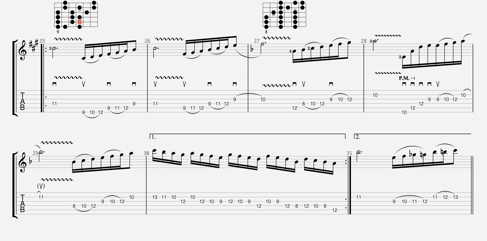
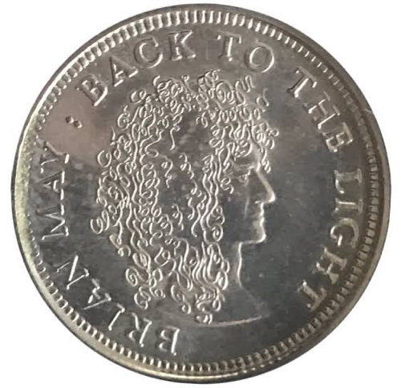
Poslechni si